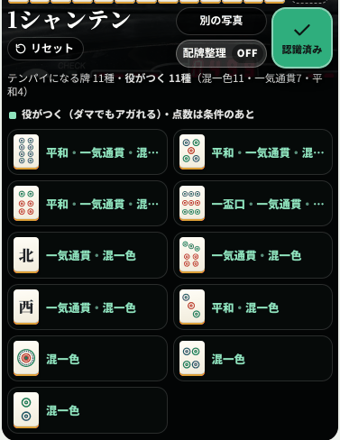
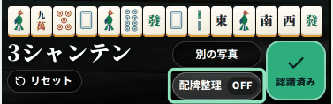
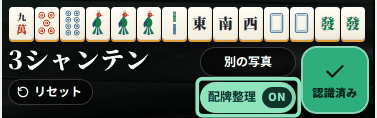
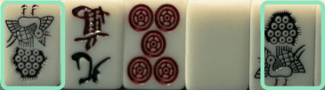
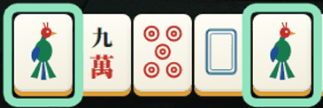
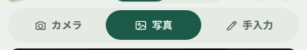
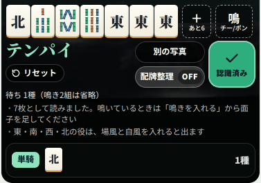
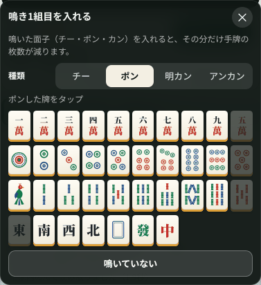
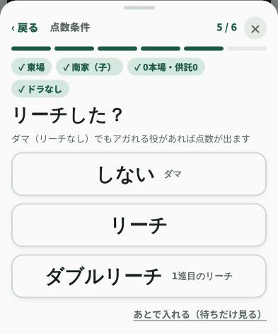
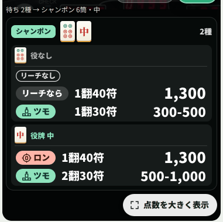

このアプリでできること
写真から待ちを出すだけのアプリではありません。「実戦で手が止まる場面」をひと通り拾えるように作っています。
1テンパイしていなくても、受け入れが分かる
13枚そろえば、テンパイでなくてもシャンテン数と「この牌が来ればテンパイ」が出ます。1シャンテンでは、テンパイになる牌が役がつく牌（平和・一盃口・ドラ…）と役なしの牌に分かれて並ぶので、「これが来たら平和がつく」といった実戦の考え方のまま見られます。押すと、いちばん高い切り方が出ます。

2シャンテン以上のときは種類数だけを出します（牌が多くなりすぎて、かえって読みにくいためです）。
2「配牌整理」で並べ替え、押し戻しもできる
写真から読んだ牌は写真に写っていた順のまま並びます。配牌整理を ON にすると種類順に並べ替わり、もう一度押すと元の並びに戻ります。配牌のようにバラバラの手ほど効きます。


読み取りが合っているかを確かめるときは OFF（写真と見比べられます）、手を考えるときは ON、と使い分けられます。どちらに切り替えても、待ちとシャンテン数の答えは変わりません。
3牌が逆さまでも、そのまま読める
手牌には、上下が逆さまのまま置かれた牌がよく混ざります。「何待ち？」は牌を1枚ずつ見分けているので、向きをそろえ直さなくても、そのまま読めます。


この写真は14枚のうち5枚が逆さまでしたが、14枚とも正しく読めました。手元で確かめた範囲では、逆さまの牌でも向きをそろえた牌とほぼ同じ正解率でした。
4電波がなくても、そのまま動く
読み取りも計算も端末の中で完結します。ホーム画面に一度追加しておけば、機内モードでも、電波の届かない雀荘でも、同じ速さで動きます。
- サーバーに問い合わせないので、待ち時間がありません（読み取りは1〜2秒）。
- 通信量もかかりません。
- 写真が外に出ないので、人の手牌を撮っても安心です。
追加のしかたは使い方の「ホーム画面に置いて使う」をご覧ください。
5入れ方は3通り。その場でも、あとからでも

- カメラ … その場で手牌にかざして読み取る。スマホを横にすると、カメラだけの画面になって近くから撮れます。
- 写真 … アルバムにある写真から読み取る。あとで見返すときや、友だちに送ってもらった画像にも使えます。
- 手入力 … 写真がなくても、牌を選んで並べられます。本で見た問題を解くときに。
6鳴いていても判断できる
手牌が10枚・7枚・4枚で読み取れたときは、鳴いているものとして扱います。待ちとシャンテン数はその場で出ますし、鳴いた面子を入れれば点数まで出せます。


7点数まで、迷わずたどり着く
点数を出すための「点数条件」（場風・自風・本場・ドラ・リーチ…）は、読み取ったあとに画面の下から1問ずつ聞きます。押すと次の質問へ進み、要らない質問は飛ばします。場風やドラを入れ忘れたまま、まちがった点数を信じてしまわないよう、答え終わるまで点数は出しません。


待ちは形ごと（両面・シャンポン・三面張…）にまとまり、牌ごとに役が付くので、どれでアガるのが得かを見比べられます。翻数・符・役の内訳・面子の分け方まで出るうえ、役がなくてアガれないときは、リーチをかければ何点か・ツモなら何点かまで出ます。
答え終わった直後は、待ち・役・ロン／ツモ・翻・符・点数だけを大きく重ねて表示します。卓の上でも一目で読める大きさで、✖を押すと元の画面に戻ります。ロンは「的の真ん中に牌（当たり牌）」、ツモは「山から牌を引き上げる」絵が付くので、文字を読まなくても見分けられます。本場や供託があるときは、本場・供託込みの点数（例: 1,500-2,800(2本場)+2,000(供託2)）も小さく添えます。
そのほか
- 三人麻雀に対応。2〜8萬と赤5萬を抜いた牌姿で計算し、抜きドラ（北）も入れられます。
- ルールを場に合わせられる。喰いタン・切り上げ満貫・数え役満・ツモ損の有無などを切り替えられます。
- 本場と供託を入れると、受け取る合計点まで出ます。
- 読み間違いはタップで直せます。候補が出るので、選び直すだけです。